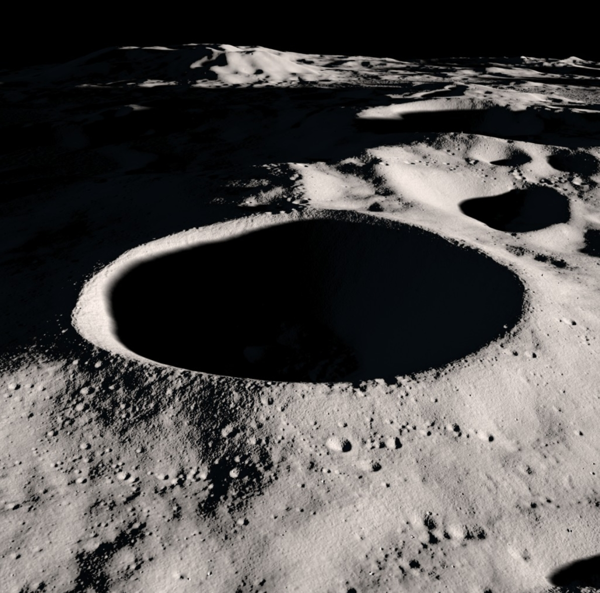
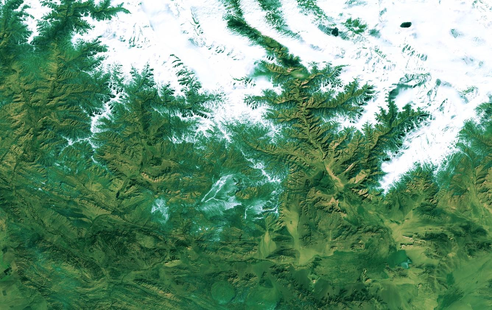
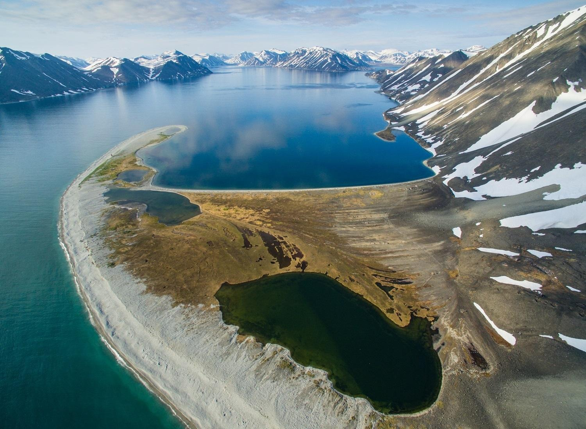

Candidate Area 1: Altai Region (Mongolia-China Border)
RANK: 1ST
MOON: SHACKLETON CRATER
EARTH ANALOG: ALTAI REGIONLocation & Selection
| Latitude | 47.5° N |
| Longitude | 90.0° E |
| Area | Altai region, Mongolia–China border |
Why Selected?
- • Highest slope-distribution similarity to Shackleton Crater.
- • Lowest Mean Absolute Error (MAE) of 2.692°.
- • Plutonic and sedimentary rock units present.
Analysis Results
| Ranking | 1st out of 13 regions |
| Coverage | 100% (30,976 pixels) |
| Imagery | Sentinel-2 L2A (Sept 14, 2026) |
| Cloud Cover | 0.0028% |
Assessment:
The strongest candidate among evaluated regions in slope-distribution similarity.
Candidate Area 2: Bering Strait Region (Eastern Russia)
RANK: 2ND
MOON: SHACKLETON CRATER

EARTH ANALOG: BERING STRAITLocation & Selection
| Latitude | 64.5° N |
| Longitude | 173.5° W |
| Area | Near Bering Strait, eastern Russia |
Why Selected?
- • Second-highest slope-distribution similarity to Shackleton.
- • Recorded Mean Absolute Error (MAE) of 3.076°.
- • Volcanic and plutonic rock units indicated by GLiM.
Analysis Results
| Ranking | 2nd out of 13 regions |
| Coverage | 100% (30,976 pixels) |
| Imagery | Sentinel-2 L2A (June 17, 2024) |
| Cloud Cover | 0.9196% |
Assessment:
Strong topographic candidate, but land coverage must be verified due to coastal proximity.
Candidate Area 3: Eastern South Korea (East Coast)
RANK: 3RD
MOON: SHACKLETON CRATER
 EARTH ANALOG: EASTERN KOREA
EARTH ANALOG: EASTERN KOREA
Location & Selection
| Latitude | 37.0° N |
| Longitude | 129.0° E |
| Area | Eastern South Korea, near the east coast |
Why Selected?
- • Achieved the third-highest slope-distribution similarity to Shackleton Crater.
- • Recorded a Mean Absolute Error (MAE) of 3.089°.
- • Plutonic and sedimentary rock units present.
Analysis Results
| Ranking | 3rd out of 13 regions |
| Coverage | 100% (30,976 pixels) |
| Imagery | Sentinel-2 L2A (April 13, 2026) |
| Cloud Cover | 0.3069% |
Assessment:
The third-strongest candidate based on slope-distribution similarity.